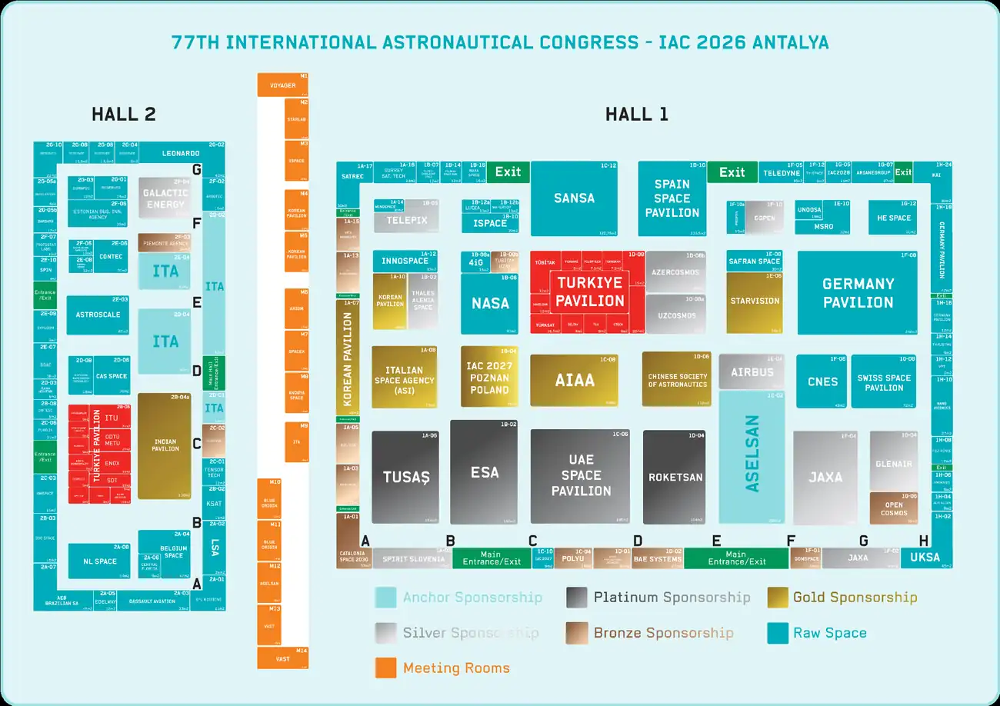

Kendi planımız, tıklanabilir resmi program ve sergi haritası tek sayfada. Bir etkinliğe ya da standa dokun, ne olduğu açılsın.
Sunum günü
Salı 6 Ekim
Sıramız
13:15–13:25
Ekran
#23
IP Alanı, NEST zemin kat. Oturum 12:45–13:45 arası: 12:35'te ekranın başında olun ve oturum bitene kadar kalın. 10 dakika, soru-cevap dahil (7 dk sunum + 3 dk soru önerilir).
Bizim için seçilenler
Planımız, gün gün
Resmi takvim, etkileşimli
IAC 2026 programı
Bir bloğa dokun, ne olduğunu, nerede yapıldığını ve kimlerin girebildiğini gör. Yıldızlı (*) ve çizgili bloklar davet edilmediğimiz, giremeyeceğimiz etkinlikler. Telefonda saatleri görmek için yana kaydır.
Hall 1 · Hall 2 · Toplantı odaları M1–M14
Sergi haritası
Turuncu noktalı standlar öğrenci olarak uğramaya en değer olanlar. Haritadaki bir standa ya da aşağıdaki listeden birine dokun. A–H harfleri koridor işaretleri. Telefonda harita yana kayar.

IP Alanı (ekran #23) bu haritada yok: kongre merkezinin zemin katında, ayrı bir alanda.
Mekan: dört ayrı bina
Salon salon kat planı kongre haftası IAF App'e ve basılı programa konacak. Hangi binada ne olduğu belli:
NEST Kongre Merkezi
Kayıt masası (yaka kartı)
IP Alanı: zemin kat, ekran #23
Teknik oturumlar, GNF, plenary'ler
Sergi alanı
D1–D3 salonları, E7 (PS Lab)
Kapanış töreni
Gloria Sports Arena
Prologue ve PE 1 (ajans başkanları)
IAF Genel Kurulu
YP akşam etkinlikleri
NEST Futbol Sahası (açık hava)
Açılış Töreni
Astronot imza günü, bilim şovu (Cuma)
NEST Plus Binası
İkinci sergi alanı
Hall 2: YP liderlik programı (Pazar)
IISL Moot Court
NEST'in ana binası iki katlı. Üst katta 10.000 kişilik, beşe bölünebilen ana salon, zemin katta 24 toplantı salonu ve geniş fuaye var. Pazar günü binayı gezip ekran #23'ü, D3'ü ve E7'yi önceden bulun. Belek'e toplu taşıma yok, kongre servis düzenliyor. Serik'ten gidiş-dönüşü önceden ayarlayın.
Sunum hazırlığı
Etiketler ve kısaltmalar
Kaçırma
Bize en çok katkı sağlayacak etkinlikler
İsteğe bağlı
Vakit olursa gidin
Teyit et
Kayıt türümüze dahil mi, kayıt masasında sorun
Giremeyiz
Sadece davetlilere, üyelere veya genç profesyonellere açık
IP
Interactive Presentation: dokunmatik ekranda 10 dakikalık sunum. Bizim formatımız.
PE
Plenary Event: ana salonda üst düzey paneller
GNF
Global Networking Forum: kısa, interaktif paneller
HLL
Highlight Lecture: günün sonunda öne çıkan bir konuşmacının dersi
YP
Young Professionals: üniversite sonrası genç profesyoneller programı
B1 / B5 / E5.4
Oturum kodları. B1: Yer Gözlemi (Hall 4). B5.4: Yer gözleminde yapay zekâ. E5.4: Afet yönetimi. E2: Öğrenci Konferansı (Hall 1). E1: Uzay eğitimi (E1 salonu).
*
Davet edilmediğimiz, giremeyeceğimiz etkinlik (davetli, üyelere ya da genç profesyonellere özel)